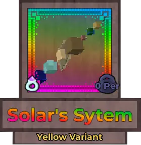
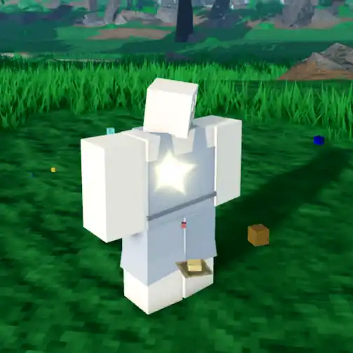
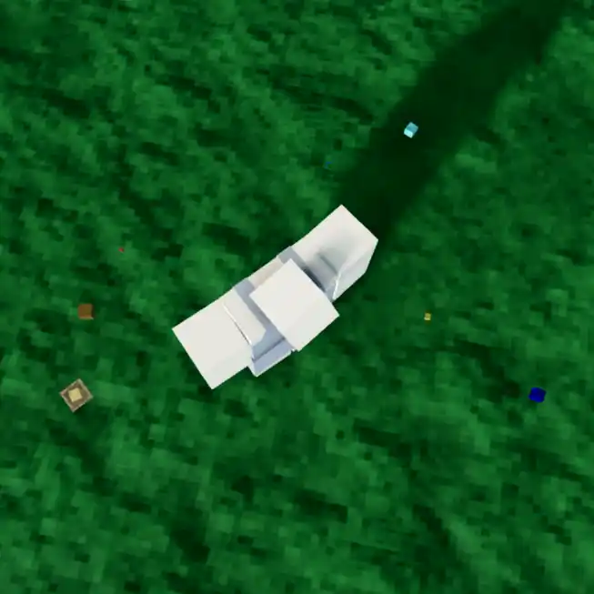
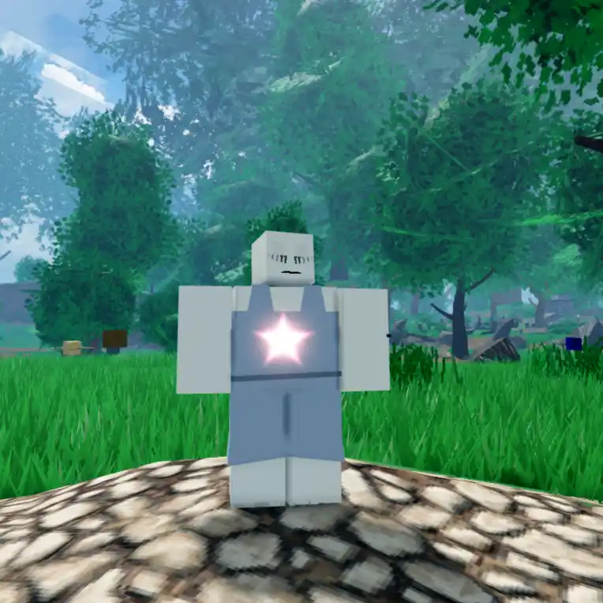
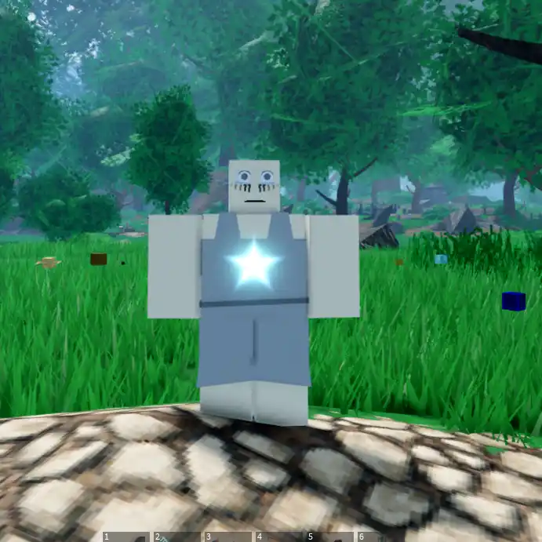
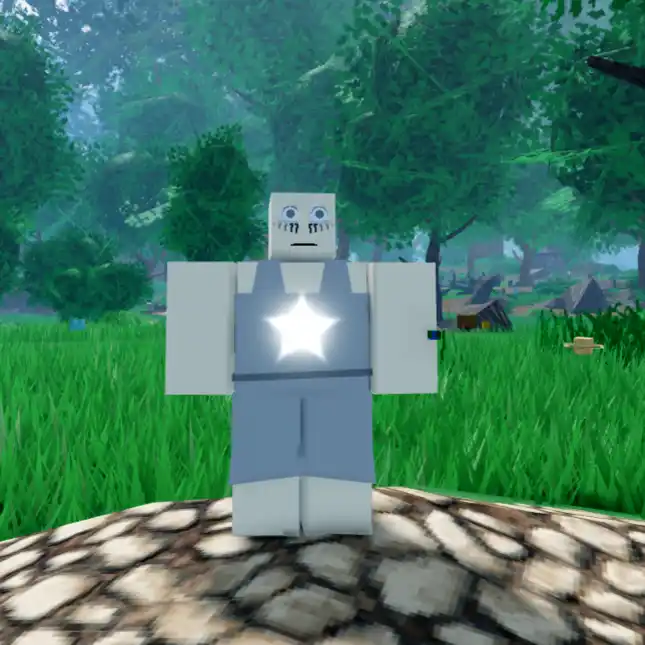

Solar's System

Info
Slot: Accessory
Recolorable?: Yes
Unique Colors: None
Particle Effects: Yes
Sound Effects: None
Owner: Solar
Appearance & Effects
In-game description: None
Solar's System is a miniature replica of the solar system that floats around the player. It consists of small models of planets that all rotate around the player's torso. The speed of rotation increases if the player is moving. Solar's System also comes with a glowing, five-pointed star that appears on the player's torso, and can be recolored. The planets are considered to be the 'particles' of this relic.
Inspiration
This relic is a pun on the name of it's owner, Solar, hence the relics name 'Solar's System' rather than 'Solar System'. This is similar to the name of Frosty's Snowflake. Solar's System used to be the Paper Mask before Solar asked for it to be replaced with the solar system so that players would not be dissapointed if they opened it from a present.

A player wearing Solar's System

The planets rotating around the player
Image Gallery

Viewed from the top

Colored red

Colored blue

Colored white